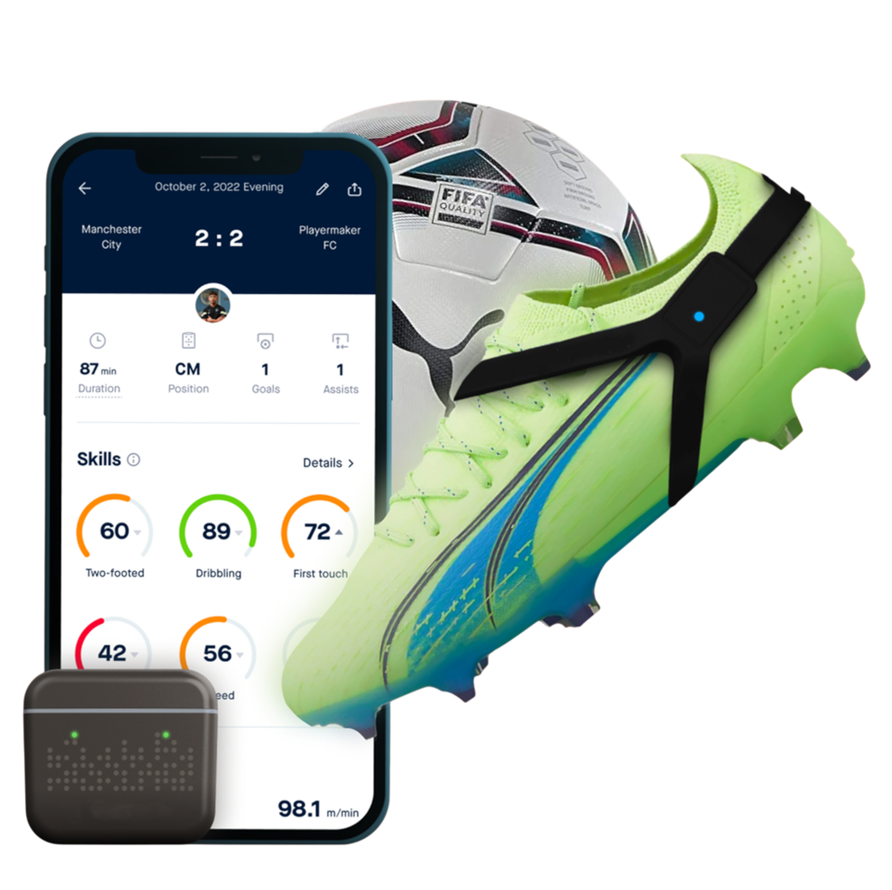
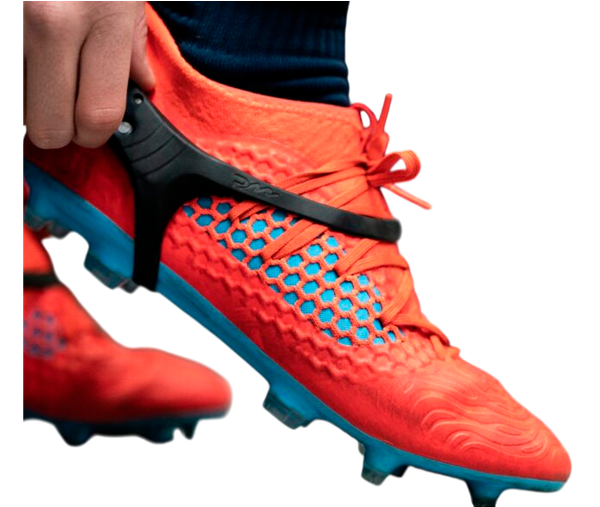

Diagnóstico | Academia | Seguimiento
IA Fútbol Lab convierte el rendimiento futbolístico en datos medibles, comparables y analizables en el tiempo. Tecnología de élite aplicada al fútbol formativo peruano.

Todo director técnico enfrenta el mismo reto: tomar decisiones que afectan el desarrollo de un jugador joven sin información objetiva suficiente.

No cambiamos metodologías. No interferimos con el trabajo del DT. Aportamos claridad objetiva para decidir mejor.
Sesión estructurada con sensores de rendimiento que capturan datos biomecánicos y físicos en condiciones reproducibles.
Medimos cómo el jugador transfiere sus capacidades físicas y técnicas al contexto competitivo real, no solo al entrenamiento.
Analizamos al jugador consigo mismo en el tiempo. No comparamos jugadores entre sí — medimos evolución personal.
Comparamos la evolución del jugador trimestre a trimestre para identificar avances reales y ajustar el plan de desarrollo.
"IA Fútbol Lab convierte el rendimiento futbolístico en datos medibles, comparables y analizables en el tiempo. Hacemos visible el proceso."
Tecnología que la élite del fútbol mundial usa — ahora al servicio del fútbol formativo peruano.
Un protocolo riguroso de 5 etapas. La data es visible cuando el entrenamiento termina.
Una interfaz diseñada para entrenadores: clara, potente y con toda la información necesaria para decisiones de desarrollo basadas en datos reales.
Tres niveles de análisis adaptados a diferentes etapas del desarrollo deportivo.
Clínica boutique para formación competitiva real — no solo entrenamiento.
Con torneos activos que necesitan datos para guiar su desarrollo temprano.
En fútbol federado que buscan identificar brechas y acelerar su progresión.
Jugadores con potencial que necesitan análisis profesional para dar el salto.
Que buscan análisis fino y datos precisos para optimizar su rendimiento.
"No comparamos jugadores entre sí.
Comparamos al jugador consigo mismo en el tiempo."
📍 Lima, Perú · Diseñando el futuro del rendimiento futbolístico
Solicita una demo gratuita o empieza con el diagnóstico de tu primer jugador hoy.